---
{
"layout": "note",
"title": "[Heat and Mass transfer] Ch 3 1-Dimensional, Steady-State Conduction-Thermal Resistance",
"journal": true,
"section": "Study",
"topic": "Heat transfer",
"excerpt": "[Heat and Mass transfer] Ch 3 1-Dimensional, Steady-State Conduction-Thermal Resistance Ch2 에서 증명하였던, Heat equation 에서 우리는 1-D, St",
"classes": "wide",
"permalink": "/blog/mechanical-engineering/heat-transfer/heat-and-mass-transfer-ch-3-1-dimensional-steady-state-conduction-thermal-resistance/",
"study_area": "Mechanical",
"date": "2024-03-28",
"source_url": "https://jeffdissel.tistory.com/m/26",
"header": {
"teaser": "/blog/mechanical-engineering/heat-transfer/heat-and-mass-transfer-ch-3-1-dimensional-steady-state-conduction-thermal-resistance/images/img-001.png"
}
}
---
{% raw %}[Heat and Mass transfer] Ch 3 1-Dimensional, Steady-State Conduction-Thermal Resistance
Ch2 에서 증명하였던, Heat equation
에서
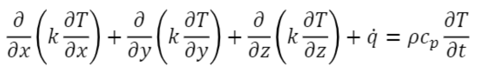
우리는 1-D, Steady state Conduction, no E generation 인 경우,
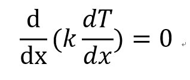
이제 위식을 적분하여 T(x)를 유도해보자.
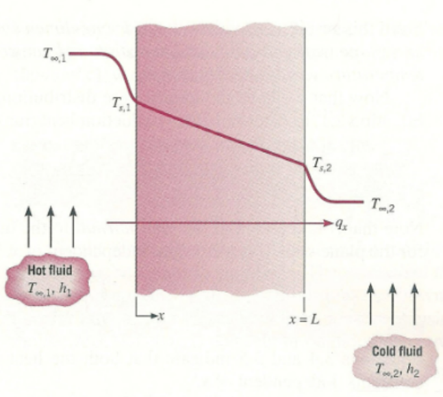
위 사진같은 상황에서
(Conduction만보자)
우리는
Boundary condition
을 알기 때문에
x = 0, T = T2
x = L, T = T1
첫번째 식을 적분해주어
Temperature equation
,
그 식을 미분한
Heat transfer rate equatio
n을 유도하자.
+ 면적을 나눈
Heat flux
까지.
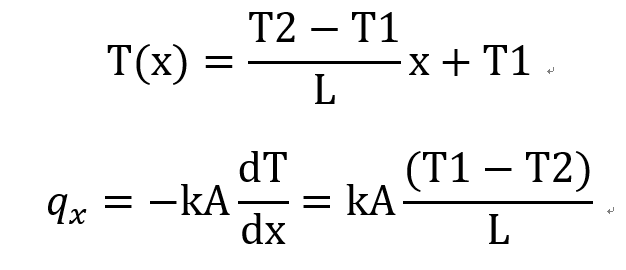
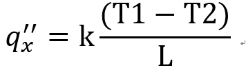
여기서 한발 더 나아가서,
Thermal Resistance
를 정의해보자.
[과학자들이 정의하는 이유는
그냥 편리해서이다.]
Thermal resistance는
electrical resistance에서 사실 복붙한 개념이다.
However, not only resistance
but Voltage, current도 같이 복붙하였다.
Voltage (V) -> Temperature (T)
Current (I) -> Heat transfer rate (q)
e-Resistance (R) -> Thermal Resistance (R)
아니 이렇게 맘대로 복붙해도 되는겨?
우리는 새로운 Thermal Resistance를 정의하는 것이고
관계식만 맞다면
문제가 없다.
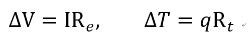
그 관계식은 중학교때 배운 Ohmn's law를
똑같이 Thermal properties에 적용시키고
관계식을 만족하는 R을 정의하면 되는것.
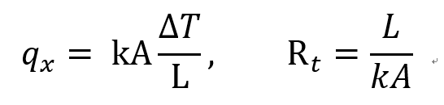
방금전에 Derive한 Heat transfer rate에 적용시키면
Rt를 다음과 같이 정의할 수 있다.
두발 더 나아가서, Thermal resistance를
Convection, Radiation 에도 적용시켜보자.
Convection
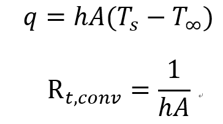
Radiation
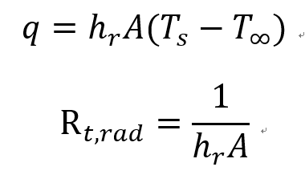
이렇게 정의하면 아주 재밌고 유용한 일이 일어난다.
(왜 정의했는지 이해가 됨)
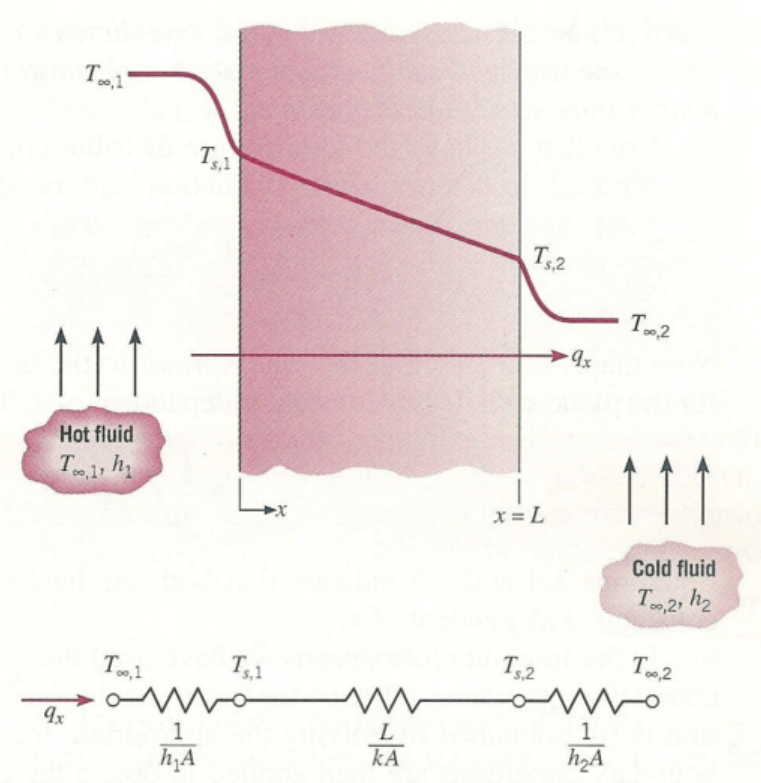
위에서 살펴본 예시를
이렇게 Thermal circuit으로 표현 할 수 있다.
게다가, 우리는 Total Resistance를 구 할 수 있다.
Total Resistance (직렬) = Summation of All R
따라서,
이렇게 총 저항으로 총 Voltage difference
즉, 총 Temperature difference를 구할 수 있다.
why? 직렬이므로 (q일정)
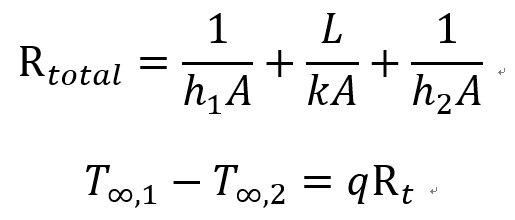
여기서 하나만 더 정의해보자.
qx =
△T/Rt 를
Newton's law of cooling의 형태인(convection)
qx = UA△T형태로 바꿔보면
Rt = 1/UA, 즉 U = 1/(Rt A) 가 된다.
우리는 U를 overall heat transfer coefficient 라고 정의한다.
※만든 이유는 사실 간단하다.
위에 R term들을 자세하게 보면
모두 면적 A가 포함 되어 있음을 알 수 있다.
따라서,
U = 1/ (Rt*A) 를 통해
그냥 A를 소거하고 분석하기 용이 하다.
(Composite wall에 자주 쓰임)
진짜. 마지막으로 Contact Resistance를 살펴보고 마무리하자.
사진처럼 Solid A->B로 heat 이 흐를때 (called as Composite wall)
완벽하게 A온도 = B온도 라고 생각했었다.
하지만 실제로는 온도가 감소한다.
그 이유는? 실제로 미세하게 solid 표면을 보면 surface roughness효과로
아주 작은 공기층들이 있음을 알 수 있다.
Ch1에서 배웠다 싶이
Thermal conductivitiy
Solid > liquid > Gas 였다.
따라서,
Thermal resistance는
Solid < Liquid < Gas
즉 gas의 경우 같은 q 대비, 온도 차이가 크다는 의미이다.
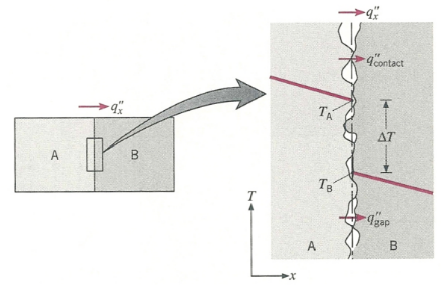
온도차이가 있기 때문에 우리는
thermal resistance가 존재한다 라고 생각 할 수 있다.
다음과 같이 표현하고 'Contact Resistance'라고 정의한다.
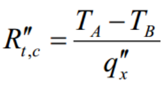
하지만,
우리의 목표는 온도 감소 없이 열이 흐르도록 하고 싶다면?
1. Interfacial fluid w/ high conductivity
Thermal resistance를 감소 -> △T 감소
Thermal resistance를 감소시키려면
Thermal conductivity가 더 큰 fluid를 Solid 층 사이에 넣어주면 된다.
우리는 사이에 넣는 유체를
Interfacial Fluid라 부른다.
2. Increase Pressure
A와 B를 표면 방향으로 압축 시킨다면?
roughness가 당연히 감소할 것이고
공기층 제거 -> solid 접촉면 증가
따라서, Thermal conductivity는 Solid > Air
즉, Thermal Resistance는 감소 할 것이다.
정리해보자면
우리는 Thermal resistance라는 개념을 도입하였다.
Thermal conductivity와 처음에는 햇갈렸지만,
Thermal resistance가 크면 저항이 크니까 전압이 크다
결국 온도차이가 크다
-> 열전달이 잘 안된다. 방해된다.
Thermal conductivity는 전도에서
사실 Thermal Resistance의 구성 요소 였다.
R = L/kA 였으므로,
따라서 Thermal conductivity가 크다는 것은?
열전도가 잘된다. why?
R 감소하므로, 온도변화 감소.
-> 열 전달 잘된다.
{% endraw %}